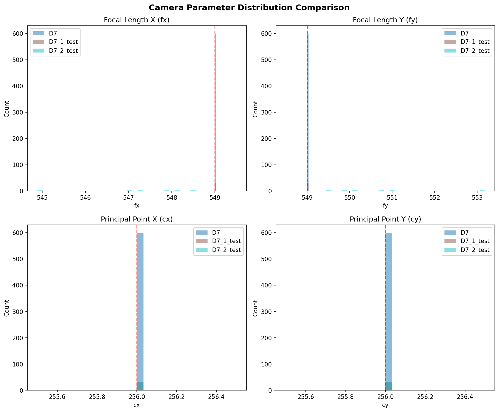
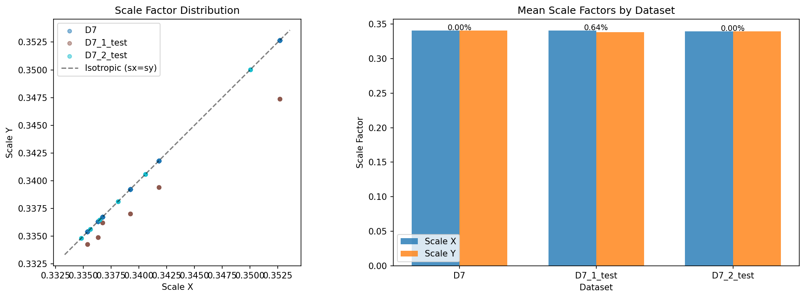
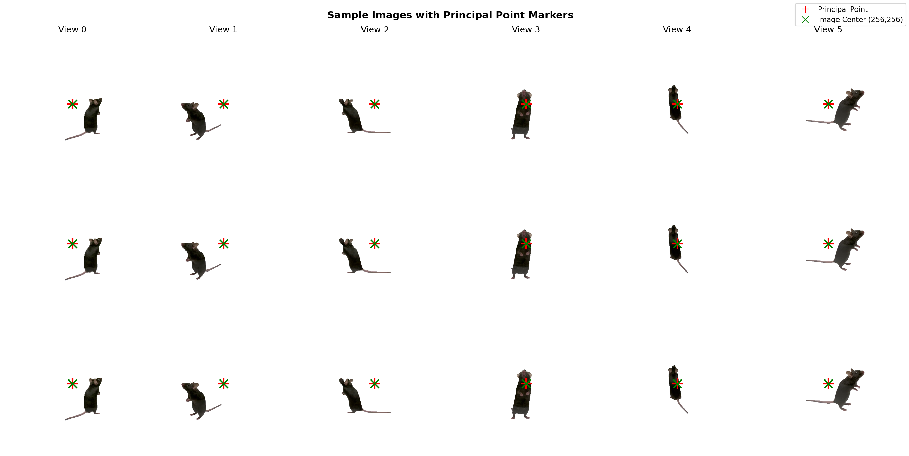
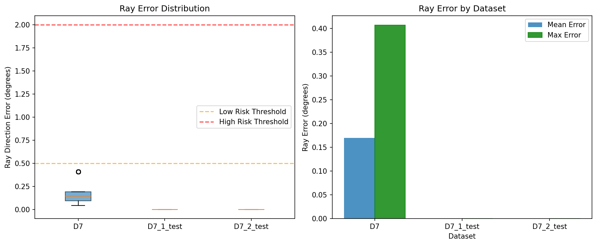

Generated: 2026-01-20 17:33
| Dataset | Scale Mode | fx | fy | cx | cy | Ray Error | Status |
|---|---|---|---|---|---|---|---|
| D7 | D7_PP_centered_shift | 549.0 | 549.0 | 256.0 | 256.0 | ~0.17° | ✅ Good |
| D7_1_test | individual | 549.0 | 549.0 | 256.0 | 256.0 | ~0.00° | ✅ Good |
| D7_2_test | average | ~547.3 | ~550.7 | 256.0 | 256.0 | ~0.00° | ⚠️ Check |
The projection from 3D world coordinates to 2D pixel coordinates:
\[ \begin{bmatrix} u \\ v \\ 1 \end{bmatrix} \sim \mathbf{K} \cdot [\mathbf{R} | \mathbf{T}] \cdot \begin{bmatrix} X \\ Y \\ Z \\ 1 \end{bmatrix} \]where \(\mathbf{K}\) is the intrinsic matrix:
\[ \mathbf{K} = \begin{bmatrix} f_x & 0 & c_x \\ 0 & f_y & c_y \\ 0 & 0 & 1 \end{bmatrix} \]For novel view synthesis, the ray direction from pixel (u, v) in camera coordinates:
\[ \mathbf{d}_c = \begin{bmatrix} (u - c_x) / f_x \\ (v - c_y) / f_y \\ 1 \end{bmatrix} \]Critical: Incorrect \(c_x, c_y\) leads to wrong ray directions, causing multi-view inconsistency and ghosting artifacts.
When fy is incorrectly recorded, the ray direction error at image edge (256 pixels from center):
\[ \theta_{error} = \arctan\left(\frac{256 \cdot |f_y^{expected} - f_y^{recorded}|}{(f_y)^2}\right) \]Risk levels: LOW (<0.5°), MEDIUM (0.5-2°), HIGH (>2°)
fx_only (D7): Same scale for both axes, fy forced to target value
\[ s = \frac{f_x^{target}}{f_x^{orig}}, \quad f_x' = f_y' = 549 \]individual (D7.1): Different scales for exact focal lengths
\[ s_x = \frac{f_x^{target}}{f_x^{orig}}, \quad s_y = \frac{f_y^{target}}{f_y^{orig}}, \quad f_x' = f_y' = 549 \text{ (exact)} \]average (D7.2): Isotropic scaling with averaged scale factor
\[ s = \frac{s_x + s_y}{2}, \quad f_x' = f_x^{orig} \cdot s, \quad f_y' = f_y^{orig} \cdot s \]After scaling, shift image to center Principal Point at (256, 256):
\[ \Delta_x = 256 - c_x^{scaled}, \quad \Delta_y = 256 - c_y^{scaled} \]The complete affine transform:
\[ \begin{bmatrix} u' \\ v' \end{bmatrix} = \begin{bmatrix} s_x & 0 \\ 0 & s_y \end{bmatrix} \begin{bmatrix} u \\ v \end{bmatrix} + \begin{bmatrix} \Delta_x \\ \Delta_y \end{bmatrix} \]Scale Mode: D7_PP_centered_shift
Camera Views Analyzed: 600
| Parameter | Mean | Std | Min | Max | Target | Status |
|---|---|---|---|---|---|---|
| fx | 549.0000 | 0.0000 | 549.0000 | 549.0000 | 549.0 | ✅ |
| fy | 549.0000 | 0.0000 | 549.0000 | 549.0000 | 549.0 | ✅ |
| cx | 256.0000 | 0.0000 | - | - | 256.0 | ✅ |
| cy | 256.0000 | 0.0000 | - | - | 256.0 | ✅ |
Scale Factors:
Ray Error Analysis:
★ RECOMMENDED
Scale Mode: individual
Camera Views Analyzed: 30
| Parameter | Mean | Std | Min | Max | Target | Status |
|---|---|---|---|---|---|---|
| fx | 549.0000 | 0.0000 | 549.0000 | 549.0000 | 549.0 | ✅ |
| fy | 549.0000 | 0.0000 | 549.0000 | 549.0000 | 549.0 | ✅ |
| cx | 256.0000 | 0.0000 | - | - | 256.0 | ✅ |
| cy | 256.0000 | 0.0000 | - | - | 256.0 | ✅ |
Scale Factors:
Ray Error Analysis:
Scale Mode: average
Camera Views Analyzed: 30
| Parameter | Mean | Std | Min | Max | Target | Status |
|---|---|---|---|---|---|---|
| fx | 547.2697 | 1.1801 | 544.8825 | 548.5588 | 549.0 | ⚠️ |
| fy | 550.7465 | 1.2008 | 549.4420 | 553.1802 | 549.0 | ⚠️ |
| cx | 256.0000 | 0.0000 | - | - | 256.0 | ✅ |
| cy | 256.0000 | 0.0000 | - | - | 256.0 | ✅ |
Scale Factors:
Ray Error Analysis:

Figure: Parameter Distribution

Figure: Scale Comparison

Figure: Sample Images

Figure: Ray Error
# D7.1 (Recommended) - Individual scale factors
python -m mouse_extensions.scripts.preprocess_D7_pp_centered \
--data-dir /home/joon/data/markerless_mouse_1_nerf \
--output-dir /home/joon/data/preprocessed/FaceLift_mouse/D7_1 \
--camera-pkl /home/joon/data/markerless_mouse_1_nerf/new_cam.pkl \
--frame-interval 5 \
--scale-mode individual
# D7.2 (Alternative) - Average scale factor
python -m mouse_extensions.scripts.preprocess_D7_pp_centered \
--data-dir /home/joon/data/markerless_mouse_1_nerf \
--output-dir /home/joon/data/preprocessed/FaceLift_mouse/D7_2 \
--camera-pkl /home/joon/data/markerless_mouse_1_nerf/new_cam.pkl \
--frame-interval 5 \
--scale-mode average
Report generated by generate_report.py | FaceLift Mouse Extension
Template version: v2.0 | {now}